Un savoir-faire transmis
Des fromages de haute qualité, faits avec un savoir-faire artisanal et une tradition transmise de génération en génération, en respectant chaque étape d'une marche à suivre stricte.
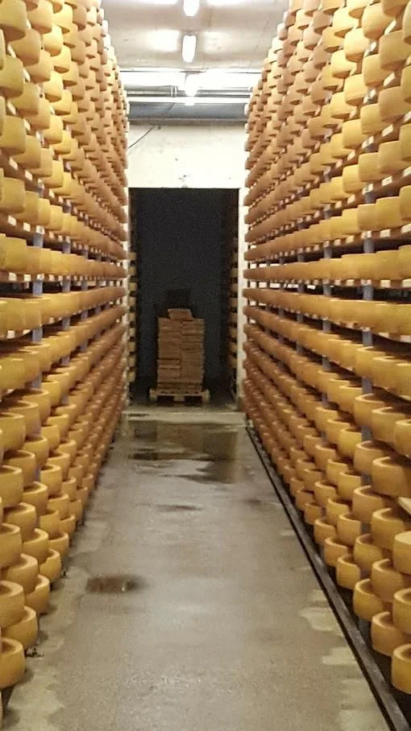
Fromagerie depuis 2006 · Ursy
Gruyère AOP, vacherin fribourgeois AOP et grizzli, produits sur notre site de production à Ursy, et vendus dans notre magasin, sept jours sur sept.
Lun – sam 8:30 – 11:30 et 17:00 – 19:00
Le lait du canton
Membre de l'association des fromagers romands et de son comité.
Ce qui fait la différence
Sur le site d'Ursy, nous disposons d'un outil de production et d'un magasin dans lequel nous commercialisons nos produits fromagers.
Des fromages de haute qualité, faits avec un savoir-faire artisanal et une tradition transmise de génération en génération, en respectant chaque étape d'une marche à suivre stricte.
Le gruyère AOP et le vacherin fribourgeois AOP. Et, venus récemment étoffer la liste, le grizzli au poivre et le grizzli à l'ail des ours.
Deux vendeuses vous accueillent au magasin tous les jours de la semaine, et même le week-end. Cartes de crédit acceptées.
La fabrication
Jusqu'à quatre millions de litres de lait par an passent par la fromagerie d'Ursy. Mifroma, affineur de fromages, est notre acheteur principal.
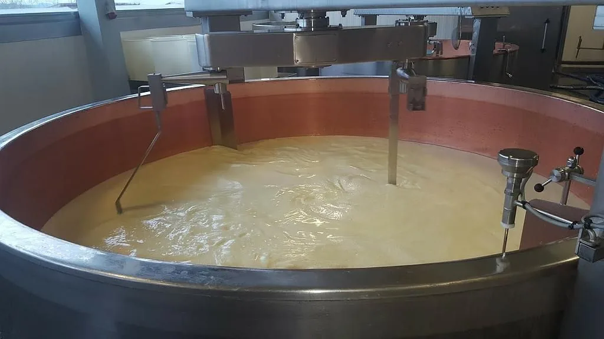
« Fromages de haute qualité et savoir-faire artisanal. »
Gruyère doux, mi-salé ou salé, vacherin fribourgeois, mélange de fondue : le lait vient des 27 producteurs fribourgeois réunis par la fromagerie.
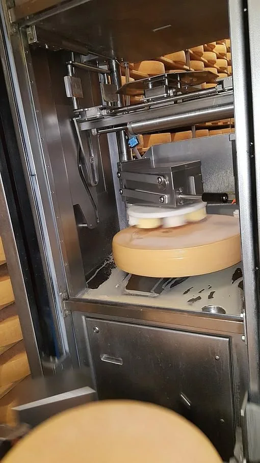
Nos fabrications
Les fromages et produits laitiers fabriqués sur place, à Ursy.
Doux, mi-salé ou salé.
Fabriqué sur place, à Ursy.
Moitié-moitié, ou pur vacherin.
Au poivre, ou à l'ail des ours.
Avec les yogourts maison et le sérac.
Au magasin, nous vendons également les tommes, les fromages à raclette et de nombreux autres fromages, que nous vous invitons à découvrir.
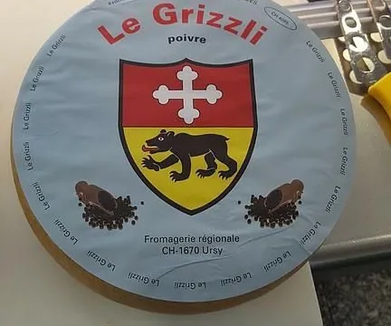
Sur commande
Pour une fête, un mariage ou un banquet : notre sélection de fromages régionaux, personnalisée selon vos souhaits.
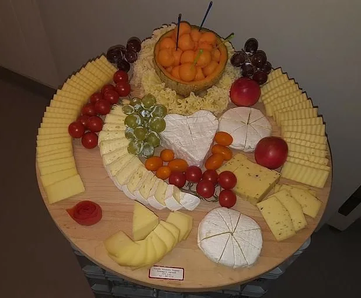
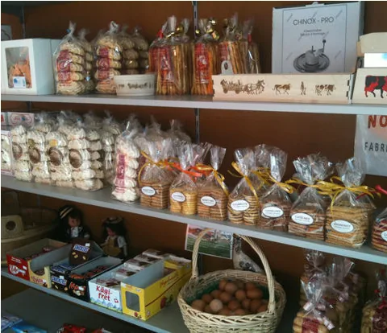
Au magasin aussi
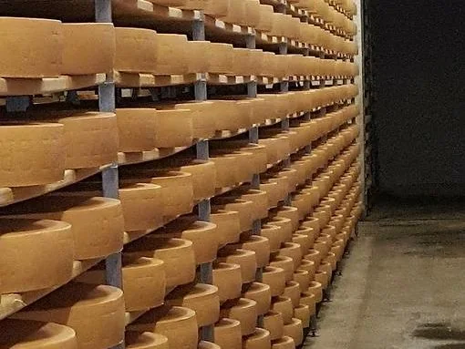
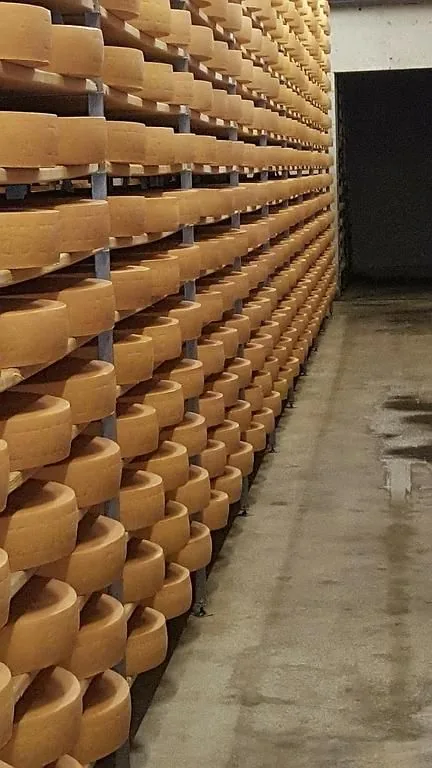
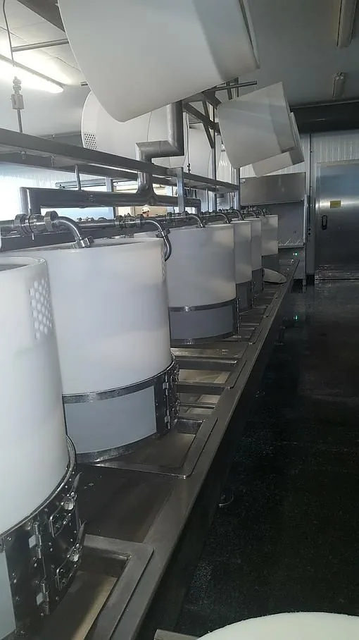
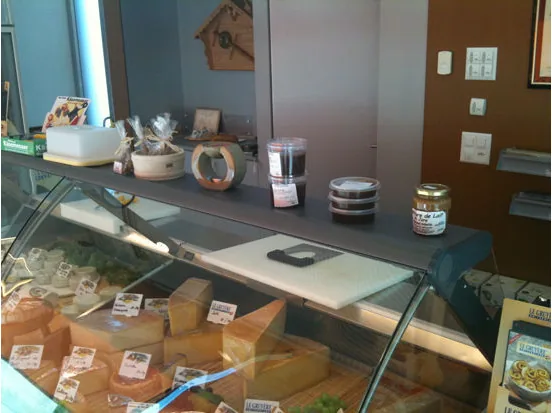
Nous rendre visite
| Lun – sam | 8:30 – 11:30 17:00 – 19:00 |
|---|---|
| Dimanche | 9:00 – 11:00 17:30 – 19:00 |
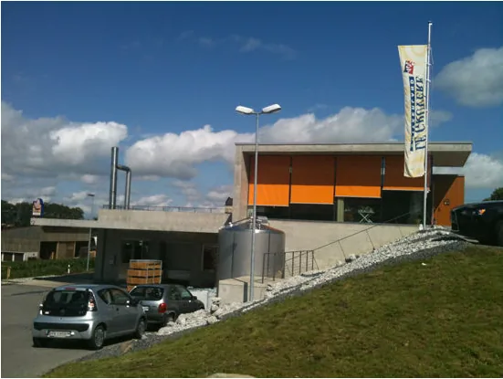
Nous sommes situés au sud-est d'Ursy. Depuis Ursy, prenez la Route de Vauderens : la Fromagerie Régionale sera sur votre gauche.